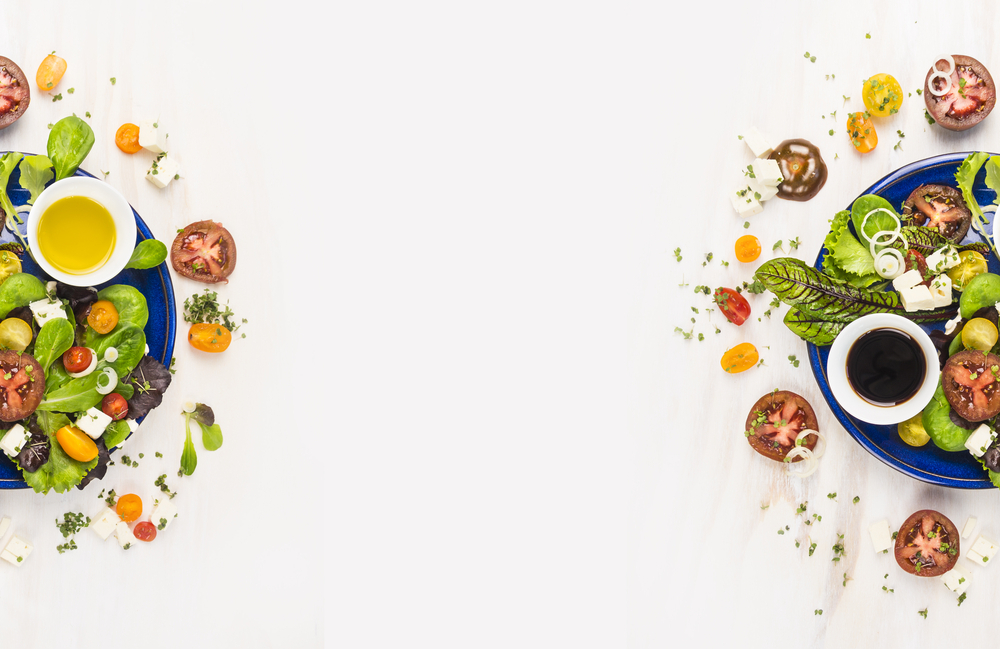
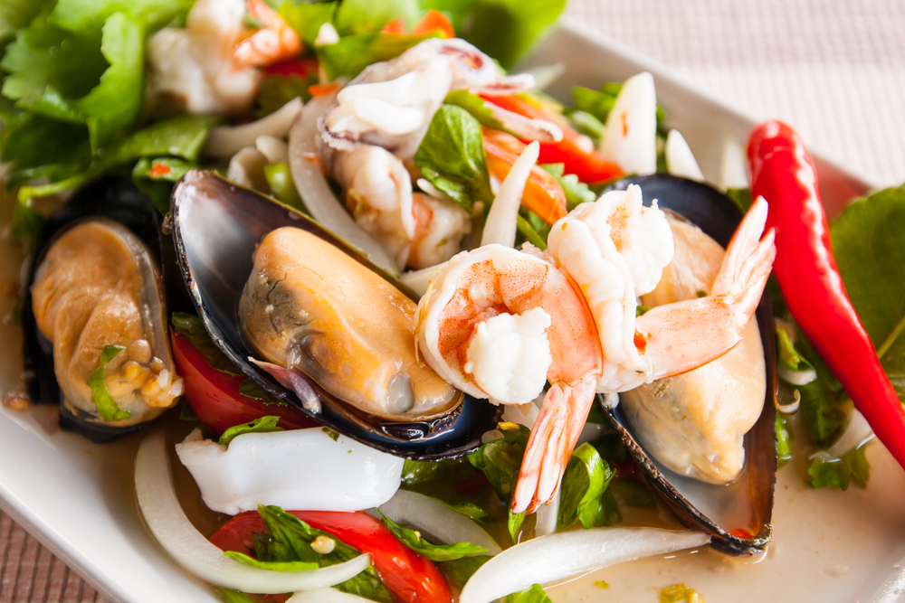
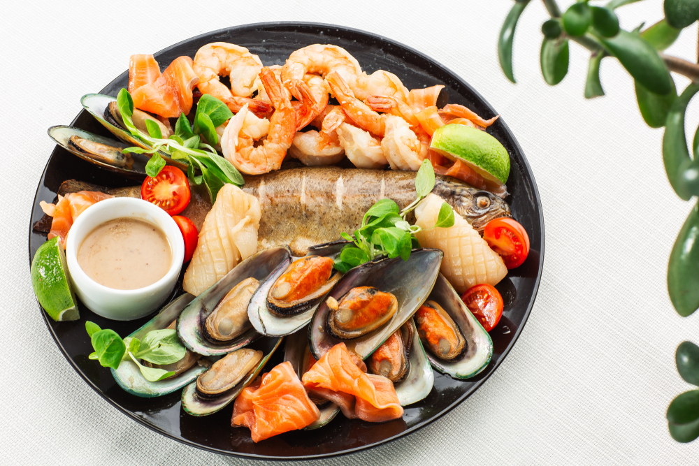
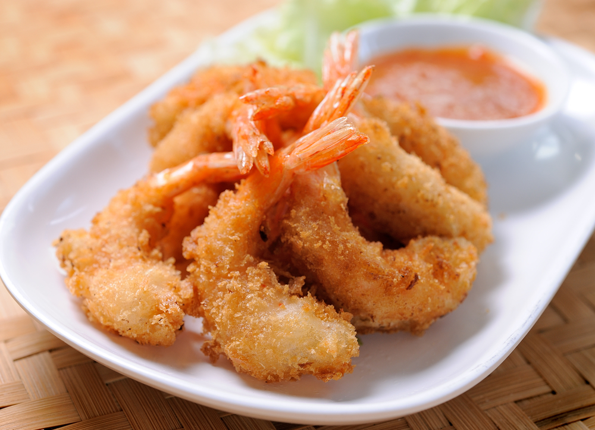
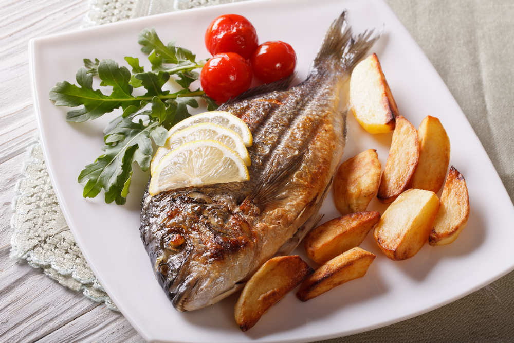
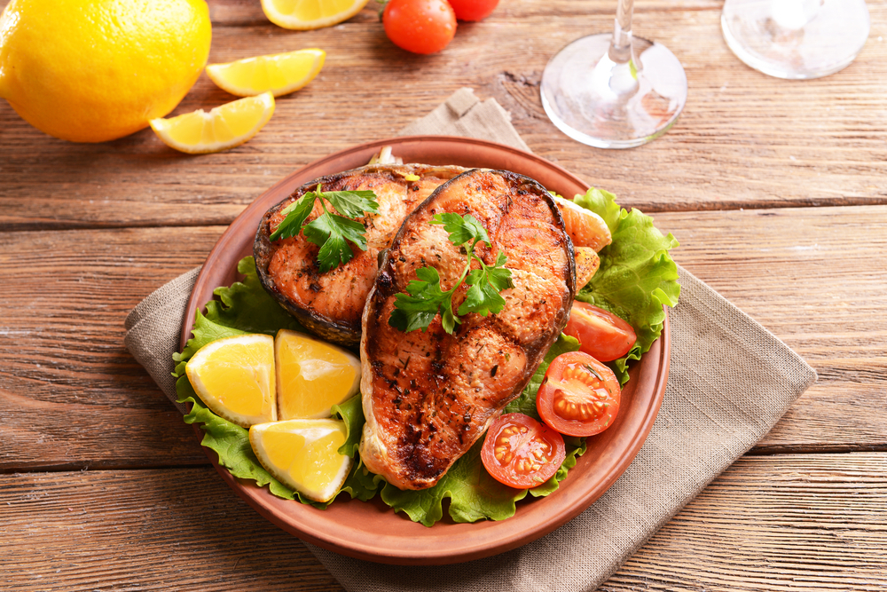
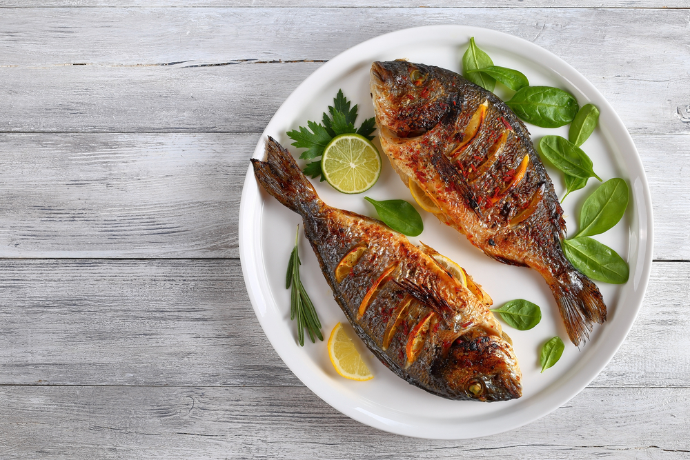
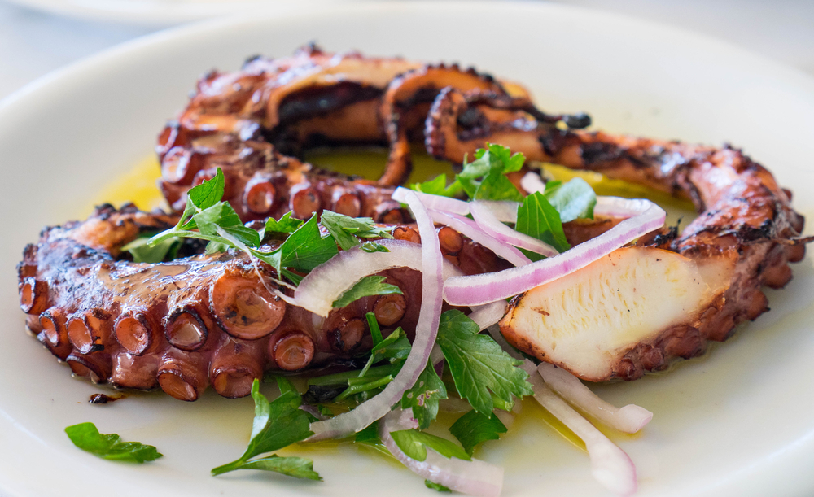

Discover
SEASHORE PALACE
OPENING HOURS
Monday-Friday : 8am-23pm
Weekends : 8am-2pm

Our story
LOVE FOR FOOD
     
From the menu
Grilled octopus
The octopus is caught fresh daily, hung out to dry in the sun and then grilled on charcoal. The outside is blackened with a nice crunchy texture and the inside is chewy and juicy. The octopus is prepared so perfectly and so flavorful that it needs minimal dressing, and is served with a simple wedge of lemon.$15

Fried oyster
the oysters are usually dipped in batter, optionally coated in breadcrumbs and various seasonings, and finally shortly fried until crispy and golden. The batter is occasionally made with buttermilk, which creates a lighter, slightly sour coating that perfectly complements the oysters.$10

Kaki fry
The dish is commonly prepared in restaurants or at home, and it consists of shucked oysters that are dusted with flour and dipped in beaten eggs before they are coated in panko breadcrumbs and finally deep-fried until crispy and golden.$12